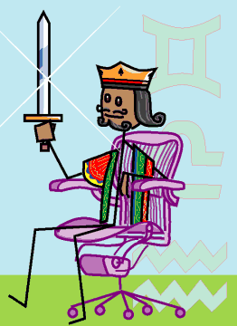

→
Damian Cugley →
Alleged Tarot 2002 →
png →
→
Damian Cugley →
Alleged Tarot 2002 →
png →
| « The Queen of Swords | The Ace of Coins » | |
|  | ||
|
The King of Wands The King of Cups The King of Coins |
||
Upright: a mature man, authoratative, assertive
Reversed: bully, exploitation, confrontation
The symbols in the background are of course those of the three zodiac signs associated with this suit.
The King’s chair is a stick-figure version of the Aeron, designed by Donald Chadwick and William Stumpf in 1992. As well as having a name suggestive of air, the Aristotlian element associated the suit of Swords, the Aeron was one of the potent symbols of the information-technology boom of the late 1990s (and the sale of Aerons on E-bay was one of the potent symbols of the dot-com collapse in the early 2000s)—and the suit of Swords governs intellectual activity.
See also Thirteen’s description on the Aeclectic Tarot site
If your browser supports SVG, then you should visit the SVG version of this page. It is so much more cool!